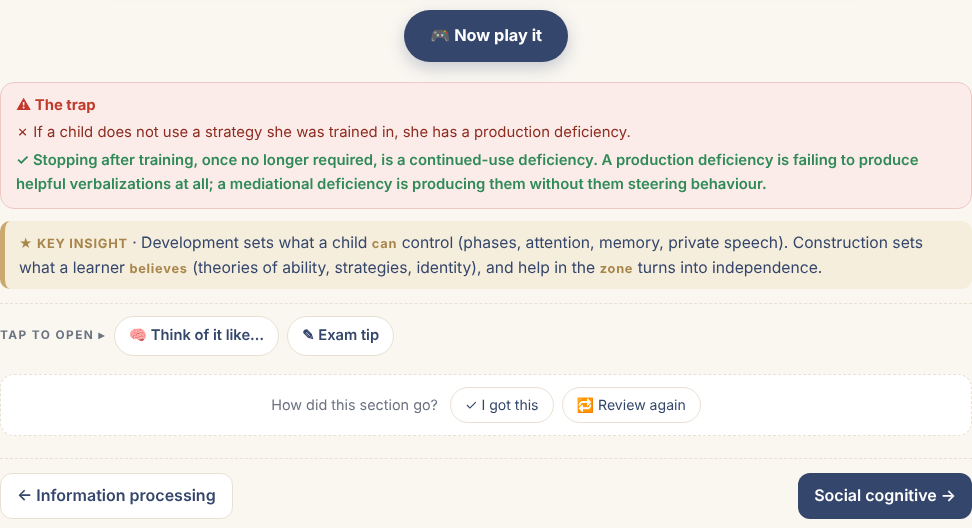
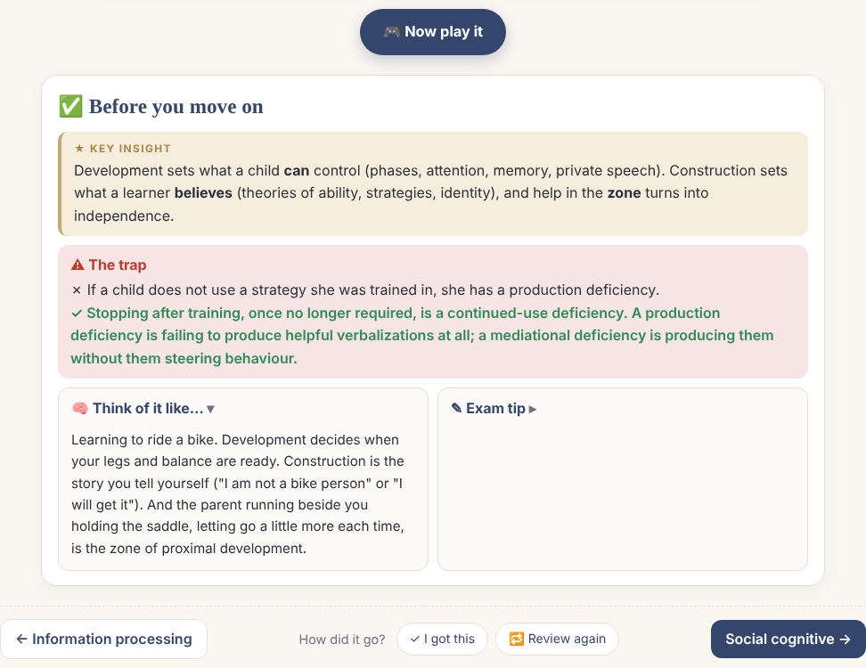
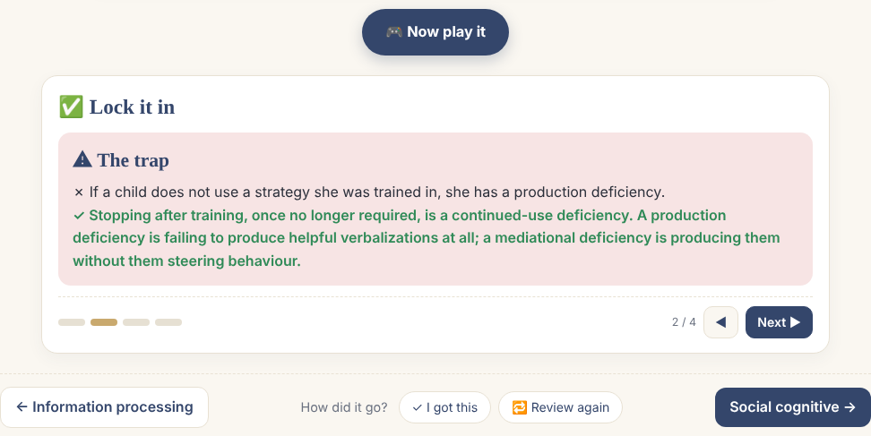
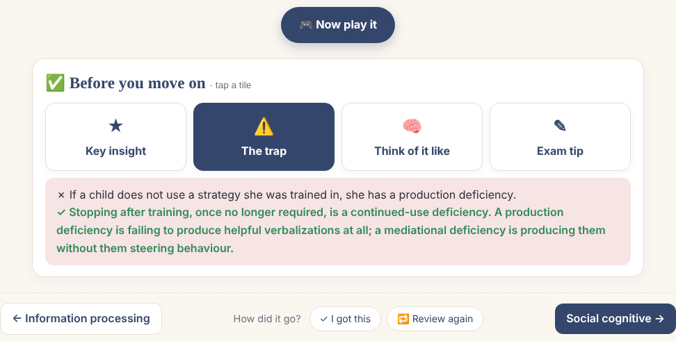

Same words in all four pictures. Pictures are from the real page (reading 1, step 5). Tap "Try it live" to use it.
Four separate blocks stacked under each other: red trap box, gold key insight strip, two small "Tap to open" buttons, a separate "How did this section go?" box, then the step buttons.

Everything gathered in one white card: key insight on top, the trap, then Think of it like and Exam tip as two boxes side by side. "How did it go?" joins the bottom bar between the step buttons.

Try it live →Works like the teaching cards: one card at a time with Next. ★ Key insight → ⚠ The trap → 🧠 Think of it like → ✎ Exam tip. Shortest on the screen; nothing to scroll.

Try it live →Four equal tiles in a row. Tap one and only its text opens underneath; tap again to close. Calm, and you choose what to see.

Try it live →